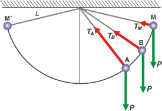
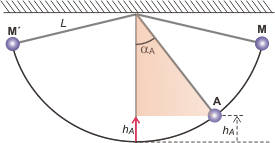

NO ME SALEN
PROBLEMAS RESUELTOS DE FÍSICA DEL CBC
(Leyes de conservación, energía mecánica)
|
|

|
Adicional No me salen E2* - Un péndulo simple oscila sin rozamiento. La relación entre las tensiones del hilo cuando pasa por los 60 y los 70 grados formados con la vertical es 1,75. ¿Cuál es el mayor ángulo alcanzado en la oscilación?
|
* Este excepcional problema me lo pasó por teléfono una lectora, Gabriela Dobry, que cuenta que se lo dieron en el ingreso del ITBA, e inmediatamente me pareció un ejercicio hermoso. Al resolverlo confirmé que gozaba de una enorme elegancia, entre otras virtudes. Te cuento: hay una economía de datos pavorosa, prácticamente no dice nada. En el planteo necesario para encontrar la solución aparecen muchísimas incógnitas, pero una a una se van cancelando o van desapareciendo y finalmente el resultado está ahí.
El problema de Gabriela tiene una enseñanza especial e importantísima, porque la falta de datos suele ser un escollo insalvable para los estudiantes iniciados, y he aquí un hermoso ejemplo de que no hay que temerle.
Como es mi costumbre voy a resolverlo en forma general y no numérica. Cuando llegue al resultado, recién ahí voy a reemplazar por los datos numéricos que me pasó Gabriela y vemos cuánto daba, ¿dale? |
|
|
 |
De modo que voy a llamar αA al ángulo inferior, en el caso de Gabi 60º; αB al ángulo superior, que en nuestro caso vale 70º; y αM al ángulo máximo alcanzado en la oscilación. Por supuesto, para cada ángulo habrá una altura diferente que llamé hA, hB, y hM, respectivamente.
El hilo del péndulo tiene una longitud L y oscila libremente y sin rozamiento entre las posiciones M y M'. |
|
|
|
Voy a llamar k a la relación entre las tensiones, lo que en el original vale 1,75.
Te voy a dibujar las fuerzas que actúan en las tres posiciones de nuestro interés así entendés qué nos está queriendo decir ese enunciado tan críptico y misterioso. |
|
|
|  |
Cuanto más abajo está la masa del péndulo mayor es la tensión. Y arriba de todo alcanza un mínimo. Bien, lo que afirma el enunciado es que
TA / TB = k
y eso es todo... Ahora ¿qué es lo que relaciona todas las posiciones entre sí? Lo sabés: que la energía mecánica se conserva, de modo que
EMA = EMB = EMM
|
|
|
|
Como el dato del problema me induce a dividir A/B voy a comparar ambas posiciones con M (no te olvides que las comparaciones energéticas siempre se realizan entre 2 estados)
½ m vA² + m g hA = ½ m vM² + m g hM
½ m vB² + m g hB = ½ m vM² + m g hM
pero como M es el punto superior de la oscilación, vM es nula y la masa -valga cuanto valga- aparece multiplicando en todos los términos, esto queda así:
½ vA² + g hA = g hM
½ vB² + g hB = g hM
Pareciera que se complica, porque aparecen cosas que no teníamos previstas: las alturas de cada posición y las velocidades. Y las tensiones siguen sin aparecer.
Las tensiones se relacionan con la velocidad en cada posición a través de la dinámica. La sumatoria de las fuerzas que actúan en la dirección centrípeta será igual al producto entre la masa y la aceleración centrípeta: ΣFc = m ac , donde la aceleración centrípeta es ac = v²/ L. ¿Estamos de acuerdo? |
|
|
 |
En las tres posiciones va a pasar lo mismo: te hice sólo el DCL de la posición B. Fijate que el ángulo de apertura con la vertical es el mismo que forma el peso con su componente centrípeta, de modo que tendremos:
TA — P cos αA = m vA² / L
TB — P cos αB = m vB² / L
TM — P cos αM = 0 |
|
|
|
| Acordate que el peso es igual al producto m . g. Sólo resta sacarnos de encima las alturas que figuran en las ecuaciones de energía. Eso ya lo habíamos hecho en otros problemas anteriormente, era así: |
|
|
|  |
Para las tres posiciones se razona igual: te lo voy a hacer sólo para la posición A. Si mirás el triangulito coloreado, te darás cuenta de que es rectángulo y que su hipotenusa vale L, ¿ok?, entonces la altura de A es L menos L por cos αA. Resumiendo:
hA = L (1 — cos αA)
hB = L (1 — cos αB)
hM = L (1 — cos αM) |
|
|
|
Ahora metemos todo en la licuadora algebraica y vemos qué pasa. En las ecuaciones de energía paso de miembro los segundos términos y reemplazo las alturas respectivas:
½ vA² = g L (1 — cos αM) — g L (1 — cos αA)
½ vB² = g L (1 — cos αM) — g L (1 — cos αB)
Multiplico todo por 2 y saco factor común 2gl en el segundo miembro:
vA² = 2 g L [(1 — cos αM) — (1 — cos αA)]
vB² = 2 g L [(1 — cos αM) — (1 — cos αB)]
saco los corchetes:
vA² = 2 g L ( cos αA — cos αM)
vB² = 2 g L ( cos αB — cos αM)
ahora despejo las tensiones de las ecuaciones dinámicas y reemplazo las velocidades al cuadrado por estas expresiones que acabo de escribir.
TA = mg cos αA + m 2 g L ( cos αA — cos αM)/ L
TB = mg cos αB + m 2 g L ( cos αB — cos αM)/ L
El largo del hilo se cancela, y saco factor común mg y opero con los cosenos.
TA = m g ( 3 cos αA — 2 cos αM)
TB = m g ( 3 cos αB — 2 cos αM)
Recién ahora, fijate, uso el dato del ejercicio; o sea, realizo el cociente entre TA y TB. Simplemente divido miembro a miembro las dos últimas ecuaciones.
k m g ( 3 cos αB — 2 cos αM) = m g ( 3 cos αA — 2 cos αM)
m g se cancela, y opero para despejar cos αM
k 3 cos αB — 2 k cos αM = 3 cos αA — 2 cos αM
k 3 cos αB — 3 cos αA = (2 k — 2) cos αM
|
|
|
| |
cos αM = ( k 3 cos αB — 3 cos αA )/ 2 k — 2 |
|
|
|
|
Para el caso de Gabriela
cos αM = 5,25 cos 70º — 3 cos 60º / 1,5
|
|
|
|
|
|
DISCUSION: Para hacer la discusión -entenderás- tendríamos que encontrar una relación entre los datos del problema y el resultado. La relación está, y es la recuadrada en amarillo, pero no es algebraicamente clara como para sacar conclusiones al voleo. Así que voy a aprovechar y la vamos a postergar para cuando resuelvas el desafío. |
| |
| DESAFIO: Te doy vuelta el problema de Gabi. Hallar la relación entre las tensiones que soporta un péndulo cuando pasa por los ángulos de 32 y 47 grados si el ángulo máximo que alcanza vale: a) 50 grados; b) 85 grados. Luego analizar los resultados obtenidos y buscarle una lógica. |
|
 |
| |
| Algunos derechos reservados.
Se permite su reproducción citando la fuente. Agradezco la atenta lectura que hizo Yamila Barrera, que detectó una errata y me la comunicó muy amablemente. Última actualización feb-07, Buenos Aires, Argentina. |
|
|
|